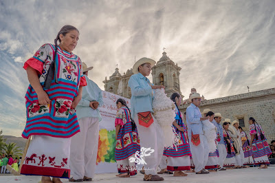
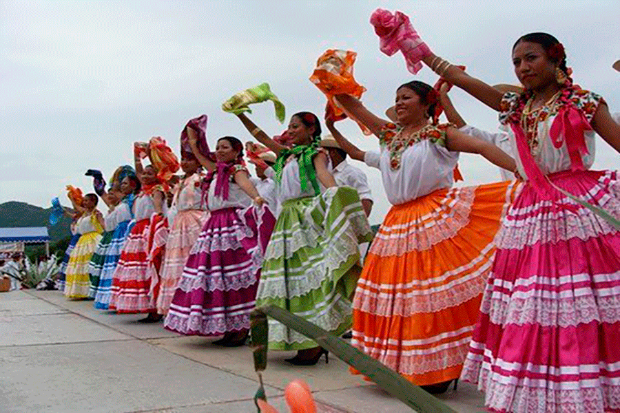
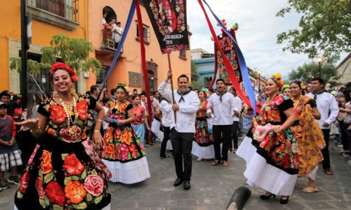
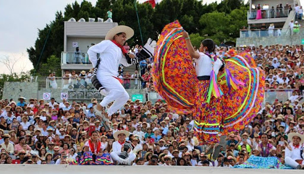

| INICIO | MÁS REGIONES |
|  | CAÑADA Si eres de la Cañada o como también la llaman, la Cañada de Huautla, sabrás que es una región de contrastes gracias a los diversos grupos culturales que cobija en lo que es considerado la región más pequeña del estado. El poblado más importante de la región de la cañada es Huautla de Jiménez. Toda la región de la Cañada está poblada por poblaciones mestizas así como por ixcacatecos, mazatecos, cuicatecos, nahuas que, durante el festival de la Guelaguetza, son representados por el baile de Huautla, en que las mujeres lanzan flores durante su baile. De la región de la Cañada son María Sabina, curandera oriunda de Huautla, que reveló al mundo el uso de los hongos alucinógenos, y Fher Olvera, vocalista del grupo Maná. |
| COSTA La Región de la Costa se encuentra al sur del estado; es un importante destino turístico, pues se encuentran las playas de Huatulco y Puerto Escondido además de Juquila, poblado que se caracteriza por ser el tercer centro religioso más grande de México; esta región está poblada por mestizos, afromestizos, indígenas mixtecos, amuzgos, chatinos, chontales y zapotecos que en la Guelaguetza, muestran una danza de Pinotepa Nacional, conocida como Las Chilenas de Pinotepa. En un poblado de esta región, San Juan Cacahuatepec, nació el más famoso cantautor oaxaqueño: Álvaro Carrillo. |
 |
|  | ISTMO Como seguramente recordarás, la región Istmo es la mayor en cuanto a extensión territorial se refiere, es cuna del pueblo zapoteco y origen de la Tehuana, traje que actualmente representa a Oaxaca en México y en el extranjero. Sus distritos son Juchitán y Tehuantepec. |
| MIXTECA Si eres de la región de la Mixteca, sabes que los mixtecas fueron una de las civilizaciones más brillantes de Mesoamérica. La Mixteca Oaxaqueña tiene 189 municipios, de los cuales Huajuapan es la ciudad más poblada, seguida de Tlaxiaco, ciudades que encabezan el movimiento por la recuperación de su legado. En la Guelaguetza se representa con el jarabe mixteco. |
 |